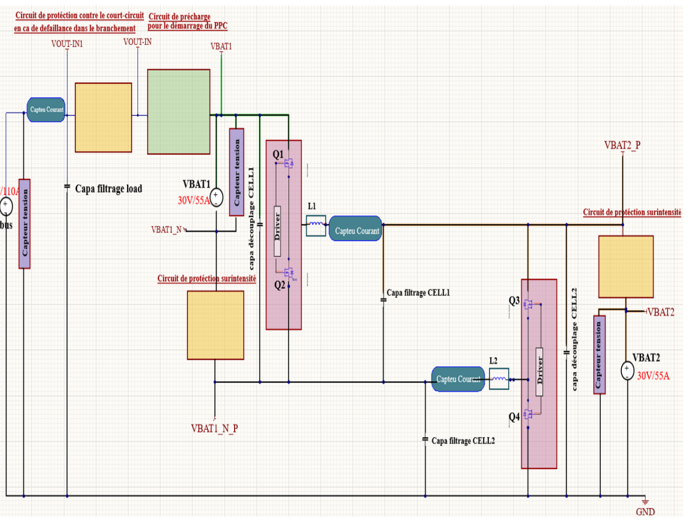
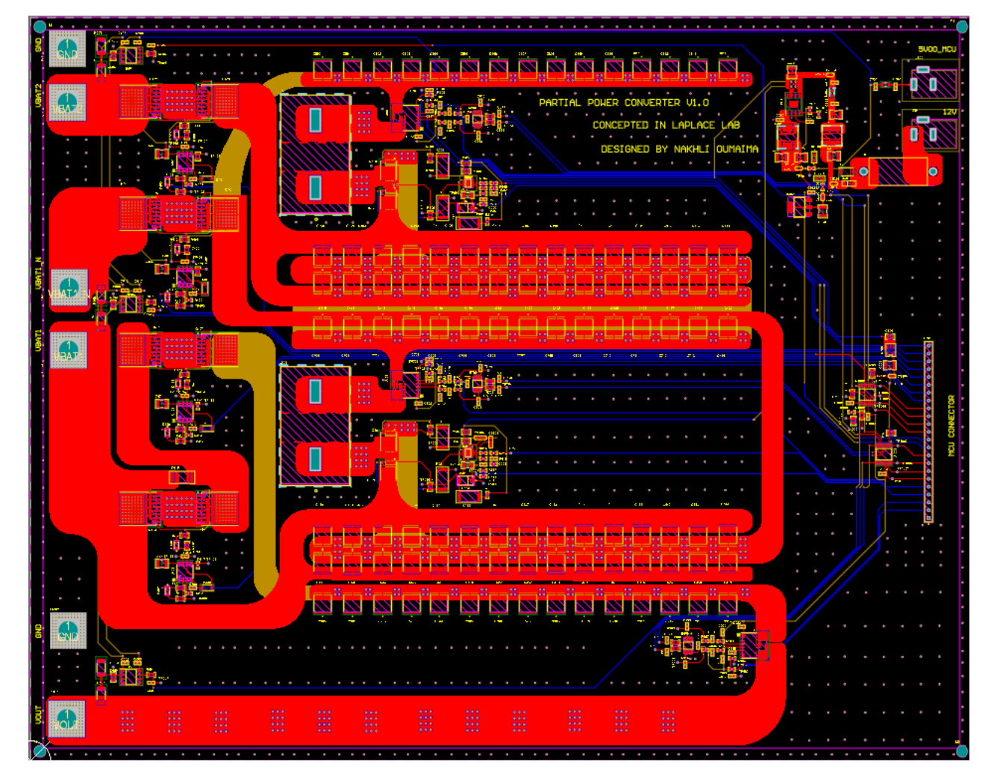

Projects / Partial-power converter
Transformerless partial-power DC-DC converter, 48 V / 5.5 kW
Summary
A conventional DC-DC converter processes all of the power flowing from source to load, so semiconductors, magnetics and cooling are all sized for the full power. A partial-power converter (PPC) converts only a fraction of it and passes the rest straight through. The gain is largest when input and output voltages are close, as with batteries, fuel cells or photovoltaic generators.
This project covers a non-isolated, transformerless PPC that supplies a 48 V bus at 5.5 kW (about 110 A) from two 30 V / 55 A batteries. The work follows a complete power-electronics design flow: topology study and simulation, component sizing, sensing and protection circuits, high-current PCB layout and thermal analysis.

Why partial power?
The thesis uses the Semiconductor Component Utilization Index (SCUI) to compare architectures. For this topology the bus voltage lies between V and 2V, so SCUI ranges from 1 to 2, whereas a classical full-power converter sits between 0 and 1. Operation was first validated in PLECS, including the effect of the phase shift between the two interleaved cells on the output current and voltage.
Design at a glance
| Input | 2 × 30 V batteries, 55 A each |
|---|---|
| Output | 48 V bus, up to about 110 A (5.5 kW) |
| Switching frequency | 140 kHz, two interleaved cells |
| Power switch | Infineon ISC018N08NM6SC (OptiMOS™ 6, Si MOSFET) |
| Gate driver | Infineon 2EDL8024G3CXTMA1, bootstrap high-side supply |
| Power inductors L1, L2 | 5.2 µH, chosen for a current ripple of roughly 19 % of nominal |
| Input decoupling | 28 × 22 µF MLCC per cell |
| Tools | PLECS (simulation), Altium Designer (schematics and PCB), Saturn PCB Toolkit (vias) |
Component sizing
Inductors, input decoupling capacitors, output capacitors, gate resistors and the bootstrap capacitor and resistor were each sized from the reference operating point (30 V, 55 A per cell, D = 0.5, 140 kHz) with margins for tolerance and operating conditions. Output capacitors are distributed along each cell and at the load.
Sensing, auxiliary supplies and protection
- Auxiliary supply chain and a 5 V reference for the acquisition chain.
- Current and voltage measurement on each branch, with signal conditioning matched to the ADC input range.
- Over-current detection outputs, short-circuit protection and a dedicated pre-charge circuit that limits inrush at power-up.
- Interface to the microcontroller that generates the PWM signals.
Power PCB design

- Stack-up: four layers with 2 oz copper. A power and return layer sits just under the top layer so the return current flows tightly under the forward path, keeping the commutation loop inductance low.
- Separated loops: the power loop and the gate-drive loop are kept apart, and decoupling capacitors are placed right at each half-bridge.
- High-current paths: wide copper pours, solder-mask openings for extra thermal copper, and parallel via arrays.
- Via count: with 0.5 mm drill / 0.9 mm pad vias rated at about 2.8 A each (checked with Saturn PCB Toolkit), at least 20 vias are needed per 55 A cell and 40 for the 110 A common path. The layout uses well above these minimums.
Loss and thermal analysis
Conduction and switching losses were estimated for the MOSFETs, then combined with a thermal resistance chain (junction-to-case, case-to-heat-sink, sink-to-ambient). For about 7.1 W dissipated per switching leg and a 25 °C ambient, the estimated junction temperature is about 71 °C, far below the 175 °C device limit. The required sink-to-ambient resistance for a 125 °C junction target is about 13.3 °C/W; the selected CTS APF19-19-13CB/A01 forged heat sink reaches 5.8 °C/W with forced convection (200 LFM), so the margin is comfortable. One heat sink covers both MOSFETs of each leg.
Status
The design, simulation and PCB layout are complete and the board has been realised. Experimental validation is the next step: comparing measured voltages, currents, losses and temperatures with the simulated and calculated values.
Skills used
Selected references
- T. A. Meynard, H. Renaudineau, P. S. Canales, S. Kouro, D. Concha, A. M. Llor, M. Fadel, H. Schneider, “Partial Power Processing: A Review and New Perspectives,” IEEE Open Journal of the Industrial Electronics Society, 2025. doi:10.1109/OJIES.2025.3572429
- J. W. Zapata, S. Kouro, G. Carrasco, H. Renaudineau, T. A. Meynard, “Analysis of Partial Power DC–DC Converters for Two-Stage Photovoltaic Systems,” IEEE J. Emerging Sel. Topics Power Electron., vol. 7, no. 1, pp. 591–603, 2019.
- J. Anzola et al., “Review of Architectures Based on Partial Power Processing for DC-DC Applications,” IEEE Access, vol. 8, pp. 103405–103418, 2020.